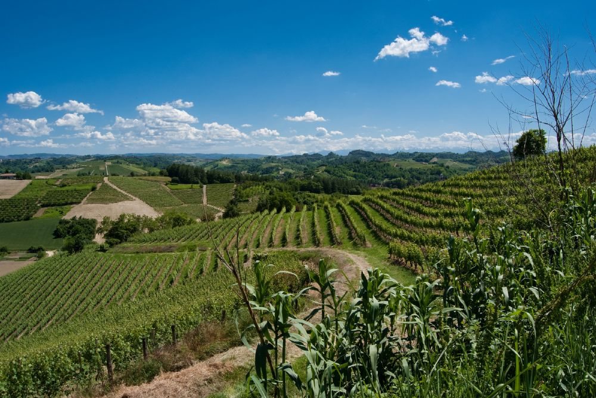
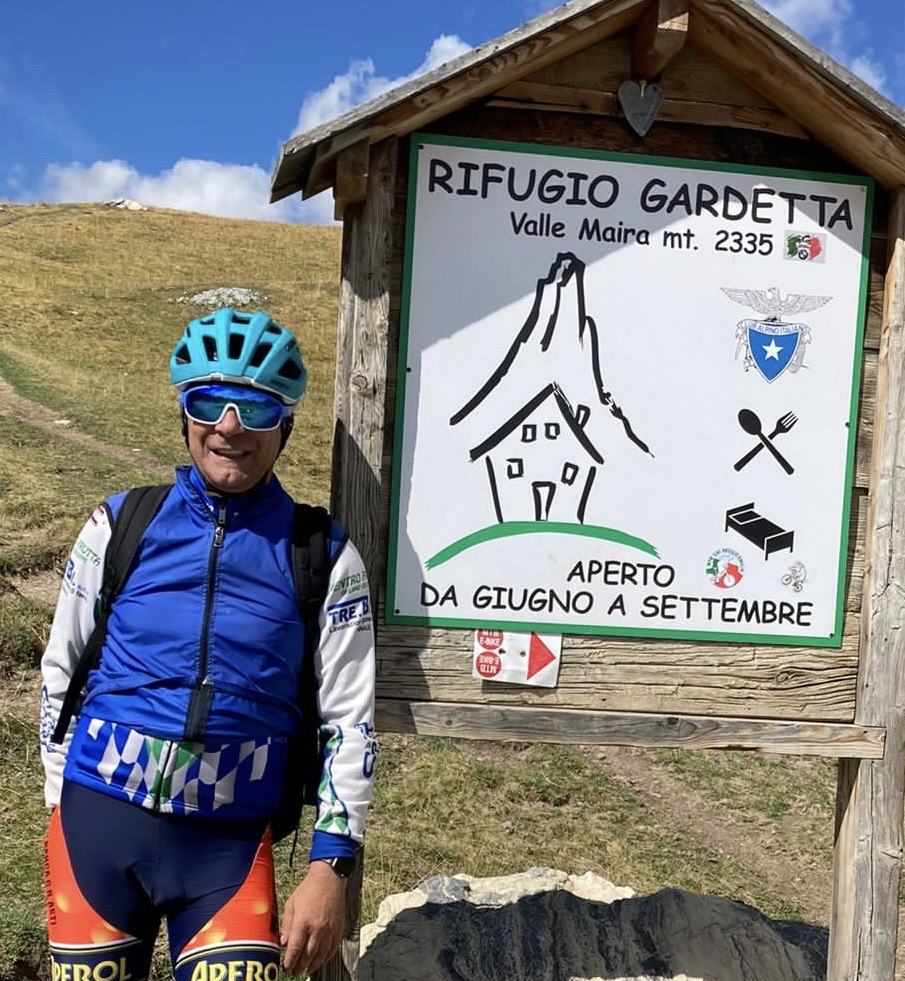

Affitta biciclette e attività outdoor
Pedala tra le colline di Langhe e Roero: ti suggeriamo percorsi, panorami e tappe golose a pochi minuti dai Taká appartamenti.

Percorsi consigliati
- Percorsi ad anello: vigneti, belvederi e rientro in paese (10–18 km, dislivello leggero).
- Verso il Roero: strade bianche e crinali panoramici (25–35 km, livello intermedio).
- Direzione Alba: tappe enogastronomiche e visita al centro storico (40+ km, intermedio).
Possiamo adattare i giri in base a tempo, allenamento e interessi (cantine, borghi, punti panoramici).
Info pratiche
- Tipologie: city bike/trekking; su richiesta e‑bike.
- Dotazioni: caschetto, lucchetto, kit riparazione base.
- Orari: ritiro/riconsegna concordati al check‑in.
Chi è Andrea Palma

Andrea Palma è il promoter del servizio biciclette di Taká appartamenti. Appassionato di outdoor e di percorsi tra Langhe e Roero, accompagna gli ospiti nella scelta degli itinerari più adatti, con consigli su panorami, tappe e soste golose.
Suggerimenti personalizzati su richiesta: famiglie, coppie, gruppi e livelli di allenamento diversi.
Prezzi
Clienti Taká appartamenti
- 85€ a persona — affitto bicicletta + tour guidato + aperitivo a sorpresaTAKA EXPERIENCE
Non clienti
- 85€ a persona — affitto bicicletta + tour guidato
- 100€ a persona — affitto bicicletta + tour guidato + aperitivo
Prezzi indicativi soggetti a disponibilità e modelli. Per gruppi e richieste speciali scrivici su WhatsApp.
Galleria attività